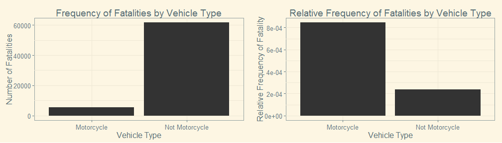
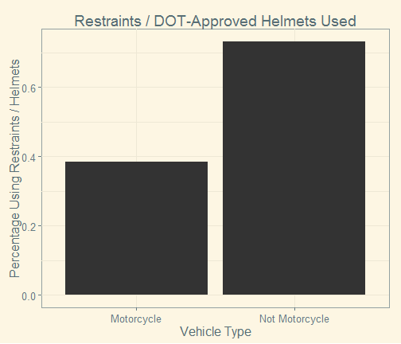
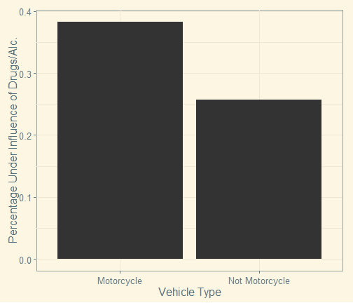
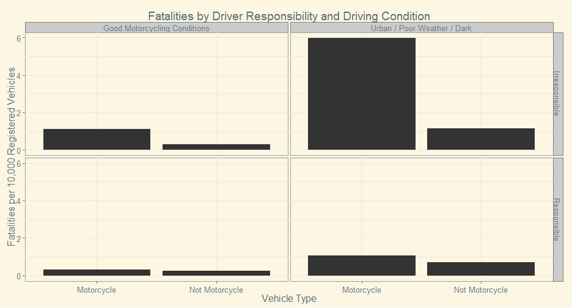

- Many people believe motorcycles are much more dangeous than cars
- Undoubtedly cyclists are more exposed and harder to see
- However, cyclists are also more alert
- It's clear from traffic statistics that cyclists are disproportionately involved in fatal accidents
- Before we jump to conclusions about motorcycle safety, let's understand why this is
An Analysis of Motorcycle Safety
Why my girlfriend should let me ride a motorcycle
Dan Garant
Legend vs. Reality
The Data
- The National Highway Traffic Safety administration publishes a yearly data set describing fatal accidents occurring within that year
- For each accident, a number of factors are reported including weather conditions, time of day, whether safety devices were used, whether speeding or drugs were involved, etc.
- This presentation uses the 2011 data set, consisting of 67,143 accident reports
A Note About Relative Frequency
- Without a doubt, there are more fatalities in accidents involving cars, trucks, and SUVs than there are involving motorcycles, so motorcycle accidents are less frequent
- However, there are fewer registered motorcycles on the road, so the relative frequency of motor accidents is actually much higher

- So, let's get started ...
Helmet / Seatbelt Use
Over 70% of 4-wheeled vehicle operators use seat belts, but less than 40% of motorcyclists wear helmets

Drug and Alcohol Usage
Motorcycle accidents are almost 15% more likely to involve drugs or alcohol than other accidents

Speeding
Motorcycle accidents are about 10% more likely to have speeding as a factor, as indicated by police reports

Legal Motorists
Many more motorcyclists than other operators are not legally permitted to drive their vehicles, either because they never got a license, or it was revoked or suspended.

Weather Conditions
Most motorcycle accidents occur in non-ideal motorcycle conditions, such as urban environments, in poor weather, or in the dark.

So What?
All of these factors are under the control of the cyclist. Let's see how things break down for a responsible cyclist that only rides under ideal conditions.
Responsibility Factors:
- Always wear a helmet
- Don't use drugs/alcohol
- Don't speed
- Don't ride with a revoked/suspended license
Condition Factors:
- Don't ride in congested areas (e.g. cities)
- Don't ride in bad weather
- Don't ride in the dark
Judge the Risk for Yourself
